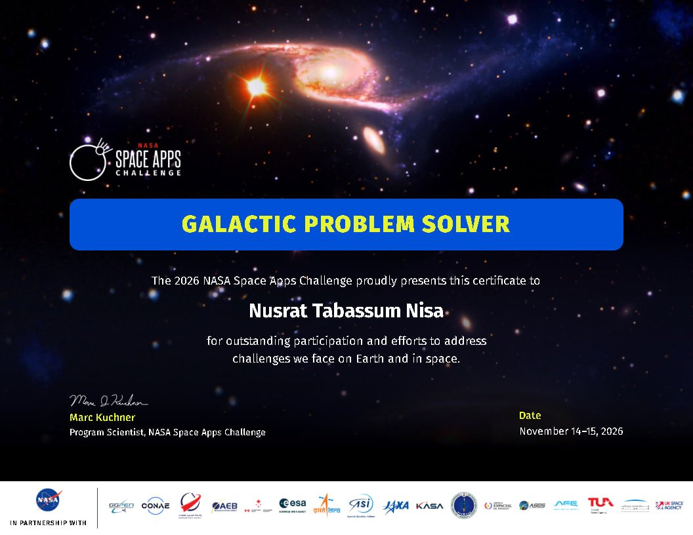

NASA SPACE APPS CHALLENGE 2026 · NOV 2026
Pahar Prohori (The Hill Guardian)
NISAR-powered landslide early warning for the Chittagong Hill Tracts
- Fuses ground-sensor streams, stored NISAR radar features (soil moisture, slope creep, coherence) and slope data in a 12-feature Random Forest that scores six hills.
- Bilingual English/Bangla alerts on web and mobile, with nearest-shelter routing.
DANGER = probability ≥ 0.60 AND ground soil wet (≥ 0.32 m³/m³) AND NISAR confirms wet soil or creep. Otherwise WATCH. DANGER holds 24 h.
Python · FastAPI · SQLite · scikit-learn · pandas · TypeScript · Expo / React Native · Leaflet · Docker
